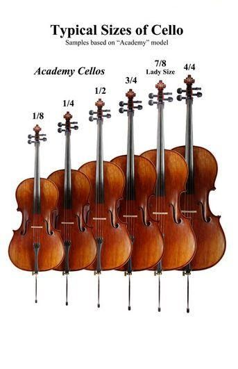

About Cello
History of the Cello
Fun Facts About the Cello
| Vocabulary | Definition |
|---|---|
| 1/8, 1/4, 1/2, 3/4, 7/8 or 4/4 | Sizes of Cellos (4/4 is full-size) |
| Celli | The plural of cello (also "cellos") |
| Violincello | The word cello is derived from. It means "little violone or little large viola" |
| The word cello is derived from: | violincello meaning "little violone or little large viola" |
| Cellist | Someone who plays the Cello, also a violoncellist. |
Cello Sizes
Parts of a Cello